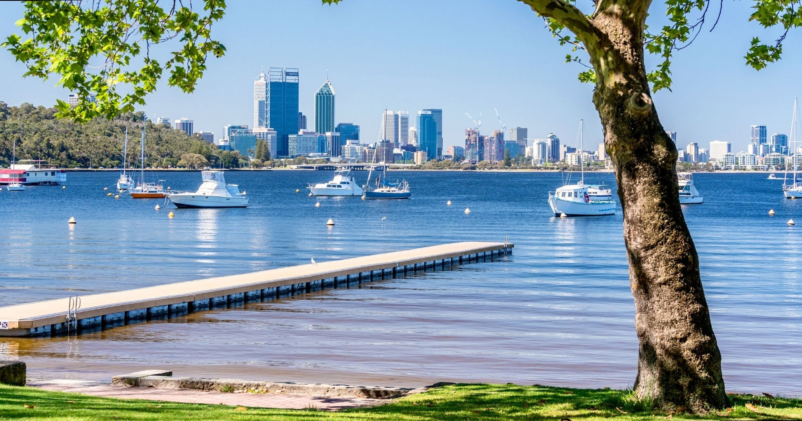
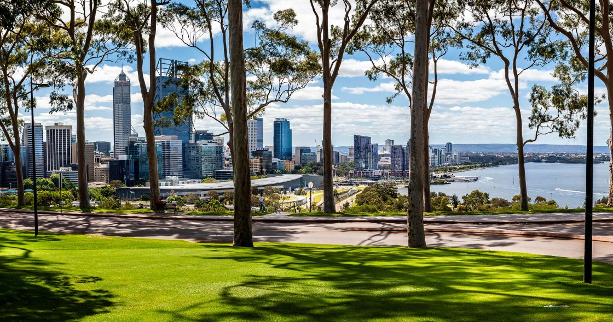
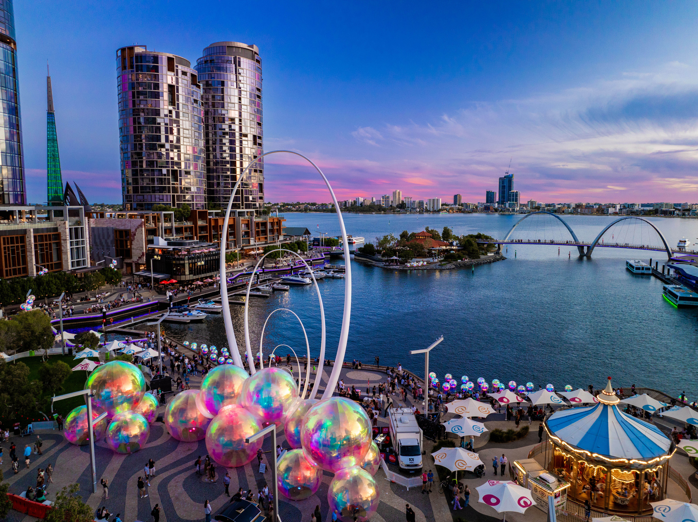
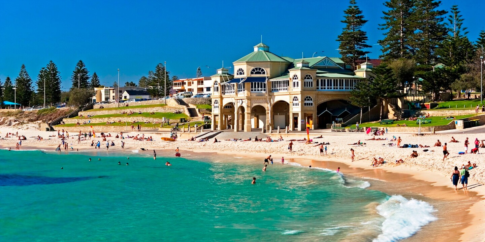
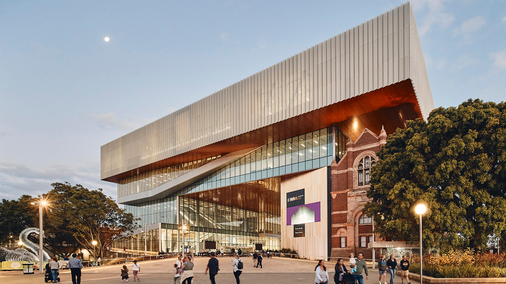
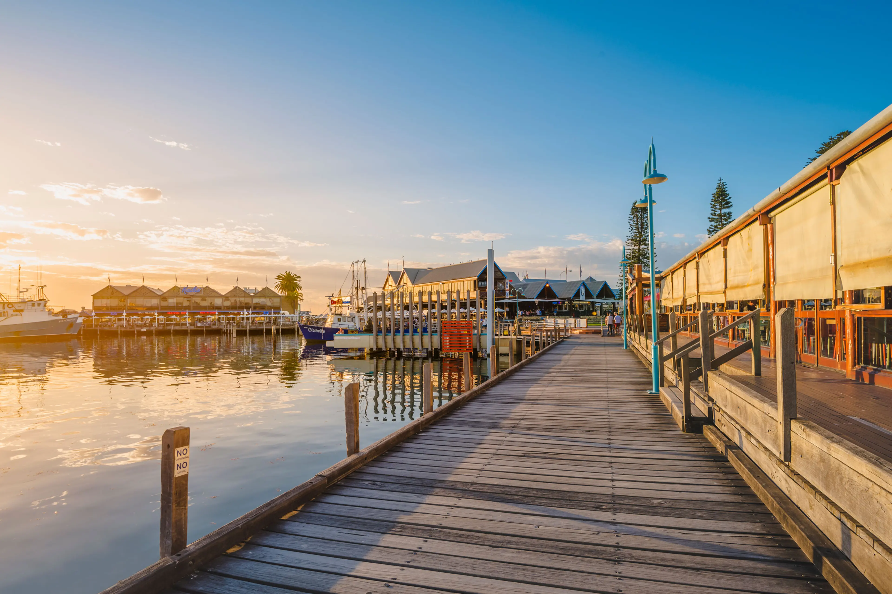
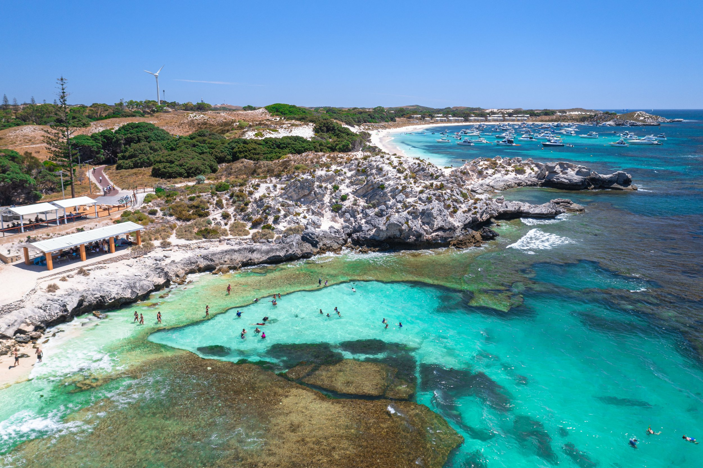
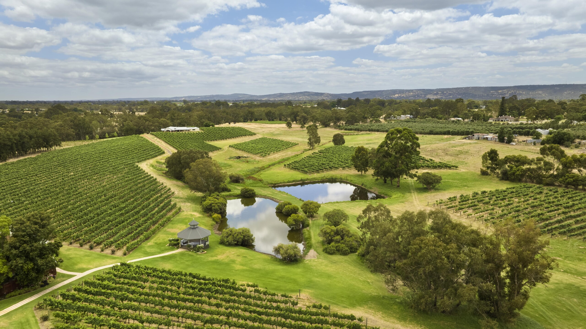

- Home
- Call for Papers
- Program Committee
- Registration
- Accepted Papers
- Author Information
- Technical Program
- Invited Speakers
- Conference Venue
- Explore Perth
- Sponsors
- Contact Us
ACISP 2026
Explore Perth
Perth offers riverside walks, beaches, food, arts, and easy day trips. If you have some time around ACISP 2026, these are a few places worth exploring.
Travel times below are approximate and generally start from the Perth CBD. Allow extra time during busy periods and check current public transport, ferry, and tour information before you travel. See Getting Around Perth for bus routes, free CAT buses, and Free Transit Zone details.
Near the Venue
Matilda Bay and the UWA Campus

Take a short walk from EZONE UWA through the Crawley campus to Matilda Bay Reserve on the Swan River, also known as Derbarl Yerrigan. The reserve has grassy parkland, shady riverbanks, and accessible pedestrian and cycle paths with views towards Perth and Kings Park. It is a pleasant place to picnic, watch boats on the water, or pause for a quiet walk between conference sessions. The UWA campus itself is also worth exploring for its gardens and historic buildings.
- From the venue: about 5-10 minutes on foot.
- From Perth CBD: about 10-15 minutes by car or rideshare, or 20-30 minutes by bus.
- Suggested visit: 30-60 minutes for a riverside walk, or longer for a relaxed break.
- Good for: a short walk between sessions or an easy sunset visit.
Kings Park and Botanic Garden

Kings Park and Botanic Garden is one of the world's largest inner city parks, combining cultivated gardens, open lawns, and extensive native bushland. Its elevated position provides views across the Swan River and Perth skyline. Highlights include the State War Memorial, Western Australian Botanic Garden, and Lotterywest Federation Walkway, a 620-metre route through the garden with an elevated bridge among the treetops. It is close to the conference venue and works well for either a short visit or a longer walk.
- From the venue: about 5-10 minutes by car or rideshare.
- From Perth CBD: about 5-10 minutes by car, rideshare, or bus.
- Suggested visit: 1-2 hours. The Memorials Walk takes about 1 hour; longer routes can fill an afternoon.
- Good for: city views, native plants, walking trails, and a visit before dinner.
Perth Highlights
Elizabeth Quay and Perth CBD

Elizabeth Quay is a waterfront precinct on the edge of the Perth CBD and an easy starting point for exploring the city on foot. A walk around the inlet takes in river views, public art, restaurants, open spaces, and the pedestrian bridge connecting its promenades. The nearby Bell Tower houses the historic Swan Bells, while ferries and river cruises depart from the waterfront. From here, it is easy to continue through the CBD or towards Northbridge for dining and evening entertainment.
- From the venue: about 10-20 minutes via the 950 bus route, 20-30 minutes on the free Purple CAT to Elizabeth Quay Bus Station, or 10 minutes by car or rideshare.
- From Perth CBD: within the CBD and walkable from many central hotels. Elizabeth Quay Train Station and Busport are nearby.
- Suggested visit: 1-2 hours for the promenade and bridge, or longer if you stop for a meal or river cruise.
- Good for: an easy evening outing, waterfront dining, and a starting point for exploring central Perth.
Learn more about Elizabeth Quay
Cottesloe Beach

Cottesloe Beach is one of Perth's best-known coastal spots, with white sand, grassy terraces, Norfolk Island pines, and views across the Indian Ocean. The beachfront has cafes, bars, and restaurants, making it an easy place to combine a walk with coffee, dinner, or sunset drinks. July is winter in Perth, so conditions may be better suited to a coastal stroll and ocean views than swimming.
- From Perth CBD: about 20-30 minutes by car or rideshare. Public transport is also available via the Fremantle train line and a connecting walk or bus.
- Suggested visit: 1-3 hours, especially in the late afternoon if you would like to stay for sunset or dinner.
- Good for: an ocean walk, sunset views, cafes, bars, and restaurants.
Learn more about Cottesloe Beach
Half-Day Trips
WA Museum Boola Bardip

WA Museum Boola Bardip shares Western Australia's many stories, including its natural and cultural heritage. Its permanent galleries include local Aboriginal histories and cultures, Western Australian wildlife and landscapes, and Otto the blue whale skeleton. The museum is in the Perth Cultural Centre, close to galleries, the State Library, cafes, and Northbridge.
- From Perth CBD: within the city centre. Perth Train Station is about 200 metres from the museum.
- From the venue: about 15-20 minutes by car or rideshare, or around 30-40 minutes by bus.
- Suggested visit: 2-4 hours for the permanent galleries, with extra time if you visit a special exhibition.
- Opening hours: currently 9.30am-5pm daily. General admission applies, and special exhibitions or events may cost extra.
- Good for: a rainy-day option, Western Australian history, natural sciences, and an easy visit paired with Northbridge or the Perth CBD.
Plan a visit to WA Museum Boola Bardip
Fremantle City

Fremantle, also known as Walyalup, combines heritage streets, waterfront areas, markets, galleries, and plenty of places to eat. Explore the heritage-listed West End, Fishing Boat Harbour, and Fremantle Markets, or visit the World Heritage-listed Fremantle Prison. Maritime history is another strong reason to visit: the WA Shipwrecks Museum and WA Maritime Museum are both near the waterfront. Fremantle is accessible from central Perth by train and is compact enough to explore largely on foot.
- From Perth CBD: about 25 minutes by train or 30 minutes by car.
- Suggested visit: 3-5 hours for a walk, lunch, and one or two attractions. A full day allows time for museums, Fremantle Prison, or the weekend markets.
- Good for: heritage buildings, food, museums, galleries, markets, and waterfront walks.
Full-Day Trips
Rottnest Island

Rottnest Island, also known as Wadjemup, is known for beaches, cycling, coastal scenery, and its resident quokkas. The car-free island has dozens of bays and beaches linked by paths, with popular stops including The Basin, Geordie Bay, and Little Parakeet Bay. Visitors can also learn about Wadjemup's rich and complex Aboriginal history at the Wadjemup Museum or on a cultural tour. Ferries depart from Fremantle, Perth, and Hillarys Boat Harbour, so allow a full day for the trip.
- From Perth: ferry times depend on the departure point. The crossing from Fremantle takes about 30 minutes; allow additional time to travel from Perth CBD to the ferry terminal.
- Suggested visit: reserve a full day, with around 5-7 hours on the island.
- Getting around: walk, hire a bicycle or e-bike, use the shuttle, or take the hop-on hop-off bus.
- Good for: beaches, cycling, walking trails, snorkelling, and learning about Wadjemup's history.
Plan a visit to Rottnest Island
Swan Valley

Swan Valley is Western Australia's oldest wine region and a good full-day option for visitors interested in food, wine, and local produce. Its 32-kilometre loop links vineyards, family-owned cellar doors, breweries, distilleries, restaurants, galleries, and produce stalls. Visitors can also look for handmade chocolates, honey, nougat, and other local goods along the way. It is easiest to explore by car or on an organized tour, especially if your plans include tastings.
- From Perth CBD: about 30 minutes by car. Tours can include transport from central Perth.
- Suggested visit: 4-7 hours, depending on how many cellar doors, restaurants, galleries, and produce stops you include.
- Getting around: a tour is a convenient option, particularly if you plan to visit wineries or breweries.
- Good for: a relaxed day of food, wine, local produce, and galleries.
Getting Around Perth
Transperth operates buses, trains, and ferries across metropolitan Perth. The JourneyPlanner is the best way to check the route, departure time, transfers, and service updates for a specific trip. Routes and timetables can change, so check your journey before leaving.
Travelling between Perth CBD and UWA
- Purple CAT: this free bus runs between Elizabeth Quay Bus Station and UWA Business School via Kings Park, Thomas Street, and the QEII Medical Centre. It is particularly useful for travelling between CBD accommodation and the conference venue. Purple CAT services run every day, generally every 10-15 minutes depending on the day.
- Route 950: this regular Transperth bus connects Elizabeth Quay Bus Station with UWA and the QEII Medical Centre. A standard fare applies. Check JourneyPlanner for the best stop and departure time.
- Other UWA services: routes 23, 102, 107, 998, and 999 may also be useful depending on where you are staying. Use JourneyPlanner to choose the most convenient service.
Free CAT Buses
Central Area Transit (CAT) buses provide free transportation via designated routes. You can board without buying a ticket or tagging on and off. The coloured routes make it easier to move around central Perth.
- Purple CAT: connects Elizabeth Quay, Kings Park, QEII Medical Centre, and UWA.
- Blue CAT: connects Perth Busport and Kings Park via Perth Station and Elizabeth Quay Bus Station.
- Red and Yellow CAT: useful for east-west travel through the CBD, including Perth Station and West Perth.
- Green CAT: connects Elizabeth Quay Bus Station and Leederville Station on weekdays.
CAT service frequency and operating hours vary by route and day. See the CAT timetables for current details.
View the Perth CAT bus map and timetable (PDF)
Free Transit Zone
Perth city also has a Free Transit Zone for some regular services. This is separate from the CAT network.
- Buses: a regular bus trip is free if it starts and finishes within the Free Transit Zone. Look for the Free Transit Zone logo on bus stops. If your journey starts or ends outside the zone, you must pay for the whole trip.
- Trains: free train travel applies between City West, Elizabeth Quay, and Claisebrook stations. You must still tag on and off normally using a SmartRider or contactless payment method.
- Conference venue: UWA is outside the city Free Transit Zone. Use the free Purple CAT where convenient, or pay the normal fare when using a regular bus such as route 950.
- Sundays: travel is free across the Transperth network on Sundays for SmartRider and contactless payment users. Tag on and off normally. Travellers using cash still need to buy a ticket.
View the Free Transit Zone map (PDF)
Tickets and Ferries
Outside the free services and zones, you can pay with a SmartRider, contactless card or digital wallet, or a cash ticket. Use the same payment card or device when tagging on and off. Transperth also operates a ferry between Elizabeth Quay and South Perth, with a crossing time of around 10 minutes; a normal fare applies.
Plan a public transport journey Transperth visitor guide Explore Perth and surrounds